A gestão da sua empresa no ponto mais alto de clareza.
Do lançamento à DRE: contas a pagar e receber, orçamento, orçado × realizado, fluxo de caixa e a sua equipe, cada um com o seu papel.
Uma solução AR ConsultoriaLeitura de 15 minutos
👋 Boas-vindas
Que bom ter a sua empresa aqui
Contas, orçamento e relatórios da empresa num só lugar, no computador e no celular.
O que cada pessoa recebe
O endereço do Vértice
O seu login (usuário ou e-mail)
Uma senha temporária, trocada no primeiro acesso
Segurança
Usuários, papéis e acessos são definidos só pela AR Consultoria. Cada pessoa vê o que o seu papel permite.
Neste guia
01
Primeiro acesso e papéisEntrar, criar a senha e o que cada papel pode fazer
02
PainelO mês da empresa em uma tela
03
Contas a pagar e receberLançar, repetir, parcelar e dar baixa
04
OrçamentoO plano do ano numa grade tipo planilha
05
Versões e aprovaçãoO Financeiro propõe, o Dono aprova
06
Orçado × realizadoO farol que mostra onde o resultado escapou
07
DRE gerencialDa receita bruta ao resultado do período
08
Fluxo de caixaEntradas, saídas e saldo mês a mês
09
Plano de contas e centros de custoOs cadastros que organizam tudo
10
Equipe, plano e solicitaçõesQuem é quem e como pedir alterações à AR
11
Celular, exportação e dúvidasExcel, PDF e perguntas frequentes
Guia do Vértice Empresas2
01 Primeiro acesso e papéis
Entre e conheça o seu papel
Abra o endereço do Vértice no navegador do computador ou do celular.
Digite o seu login e a senha temporária e toque em Entrar.
Crie uma senha nova, só sua, com pelo menos 8 caracteres.
Pronto: o Vértice abre já na sua empresa, com o menu de acordo com o seu papel.
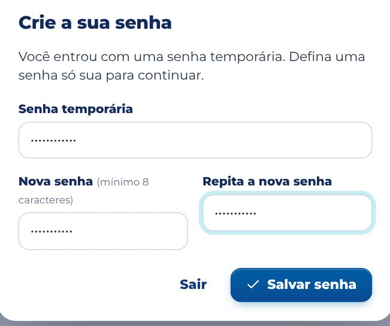
Criando a senha no 1º acesso
Os 4 papéis
DonoFaz tudo na empresa: lança, edita o orçamento e os cadastros, aprova o orçamento e envia solicitações à AR.
FinanceiroLança contas, edita o orçamento (como proposta) e o plano de contas, e exporta os relatórios.
GestorVê e lança só nos centros de custo dele, como Comercial ou Obras, e acompanha o orçado × realizado da área.
LeituraSó consulta e exporta. Ideal para o contador ou um sócio. Não conta no limite de usuários do plano.
GestorQuem é Gestor vê um aviso no topo das telas com os centros de custo que acompanha. Os números de outras áreas não aparecem para ele.
Esqueceu a senha?Fale com a AR Consultoria. Uma nova senha temporária é gerada na hora, e os dados da empresa continuam lá.
Guia do Vértice Empresas3
02 Painel
O mês da empresa em uma tela
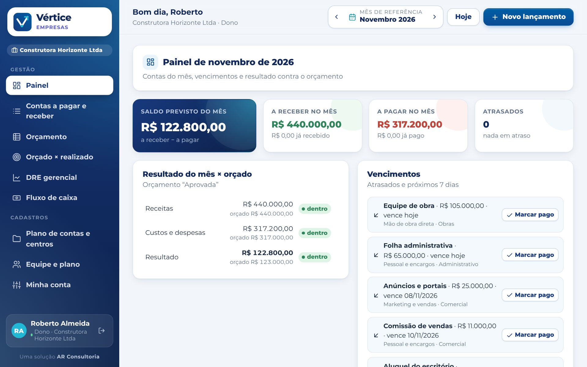
Bloco
O que mostra
Saldo previsto do mês
Tudo o que a empresa tem a receber menos tudo o que tem a pagar no mês.
A receber e a pagar
Os totais do mês e quanto já foi recebido ou pago.
Atrasados
Contas vencidas e não baixadas, de qualquer mês.
Resultado × orçado
Receitas, custos e despesas do mês contra o orçamento aprovado, com o farol de cada um.
Vencimentos
O que está atrasado e o que vence nos próximos 7 dias. Toque em Marcar pago (ou Marcar recebido) para dar baixa ali mesmo.
Use ‹ › no topo para trocar o mês e Hoje para voltar ao mês atual.
O nome da empresa e o seu papel aparecem no topo e no menu.
Guia do Vértice Empresas4
03 Contas a pagar e receber
Lance uma conta em segundos
Toque em Novo lançamento (ou no + do celular, ou aperte N).
Escolha A pagar ou A receber.
Escreva a descrição e o valor, como 1.850,00.
Escolha o vencimento, a conta do plano de contas e o centro de custo.
Se quiser, informe o cliente ou fornecedor e uma observação.
Em Repetição, escolha uma das opções da tabela abaixo.
Toque em Salvar.
Repetição
O que acontece
Só uma vez
Um lançamento no vencimento escolhido.
Todo mês
Repete o mesmo valor pelos meses que você indicar. Ex.: aluguel, folha, sistemas.
Parcelado
Divide o valor pelas parcelas, uma por mês, com a numeração 1/3, 2/3…
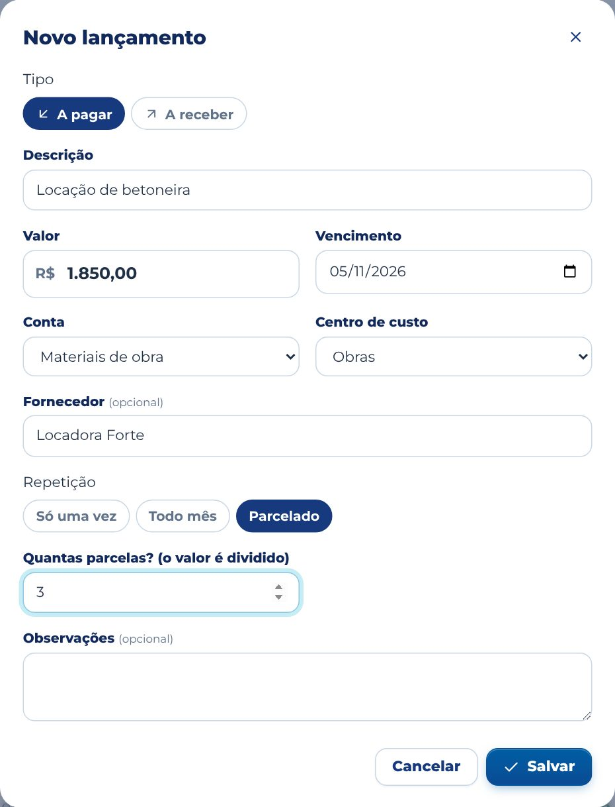
Uma locação parcelada em 3 vezes
A conta define o tipoAs contas de Receitas aparecem quando você escolhe A receber; as de custos, despesas e impostos, quando escolhe A pagar. É assim que cada lançamento cai no lugar certo da DRE.
Guia do Vértice Empresas5
03 Contas a pagar e receber
Baixas, filtros e séries
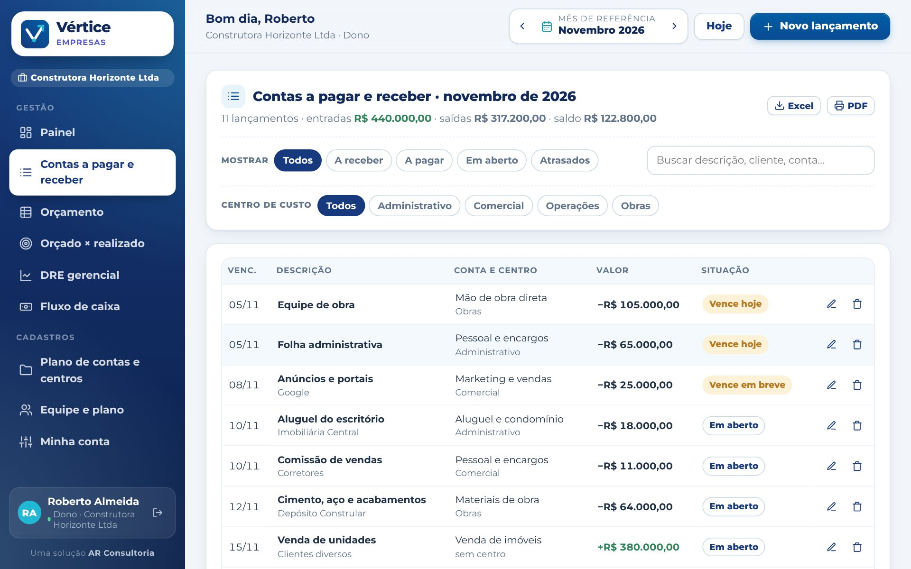
Dar baixa: toque na situação da conta (Em aberto, Vence em breve, Atrasado) para marcar como Pago ou Recebido. Tocou errado? Toque de novo ou use Desfazer.
Filtros: Todos, A receber, A pagar, Em aberto e Atrasados. Também dá para filtrar por centro de custo e buscar por descrição, cliente, fornecedor ou conta.
Totais: o topo mostra entradas, saídas e o saldo do que está na tela.
Editar: o lápis abre o lançamento. Ali também dá para marcar Já foi pago.
Excluir uma série: numa conta mensal ou parcelada, escolha Só este, Este e os próximos ou Toda a série.
GestorO Gestor só lança, edita e dá baixa nos centros de custo dele. Quem é Leitura consulta e exporta, sem alterar.
Guia do Vértice Empresas6
04 Orçamento
O plano do ano numa grade
Cada linha é uma conta e cada coluna um mês. Os totais por grupo e o resultado orçado se recalculam enquanto você digita.
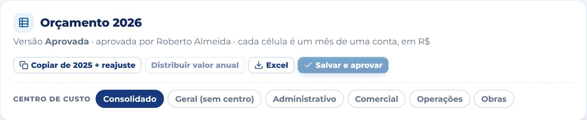
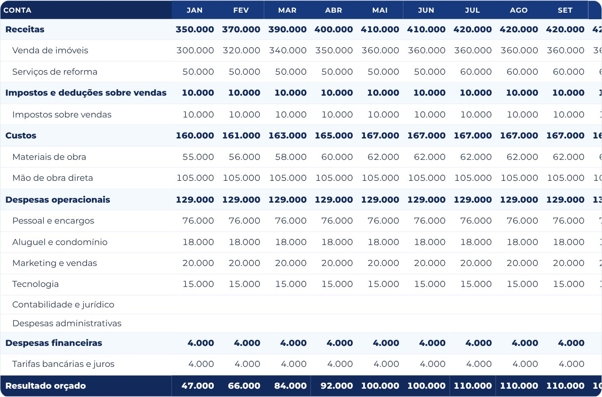
Digitar: como numa planilha. Enter desce, Shift + Enter sobe e Tab vai para o lado. Os valores são em reais inteiros.
Centro de custo: escolha Geral (sem centro) ou um centro, como Obras ou Comercial, para digitar o orçamento dele. O Consolidado soma tudo e é só leitura.
Copiar do ano anterior + reajuste: traz o orçamento do ano passado já corrigido pelo percentual que você informar.
Distribuir valor anual: escolha a conta, informe o valor do ano e o Vértice divide em 12 meses iguais.
Excel: baixa o orçamento em planilha, por conta e centro.
Guia do Vértice Empresas7
05 Versões e aprovação
O Financeiro propõe, o Dono aprova
Cada vez que alguém salva o orçamento, nasce uma versão. A versão vigente é a que vale no orçado × realizado, no painel e na DRE.
O Financeiro monta ou revisa a grade e toca em Salvar proposta, dando um nome, como “Revisão de marketing”.
A versão aparece no Histórico de versões como proposta.
O Dono abre a proposta, confere e toca em Aprovar. Ela vira vigente, e a anterior fica guardada.
Quando o próprio Dono edita, o botão é Salvar e aprovar: a versão já nasce vigente.
Histórico de versões
Comparar com versões anteriores
Toque em abrir numa versão do histórico para ver a grade dela. Se gostar, salve como nova versão, e o histórico continua completo.
Sem orçamento aprovado?O orçado × realizado mostra um aviso até existir uma versão vigente para o ano. O realizado aparece normalmente; só falta a comparação.
Alterações não salvasEnquanto houver mudanças na grade, o topo avisa alterações não salvas. O Vértice também pergunta antes de trocar de ano ou de versão, para nada se perder.
Guia do Vértice Empresas8
06 Orçado × realizado
Onde o resultado escapou
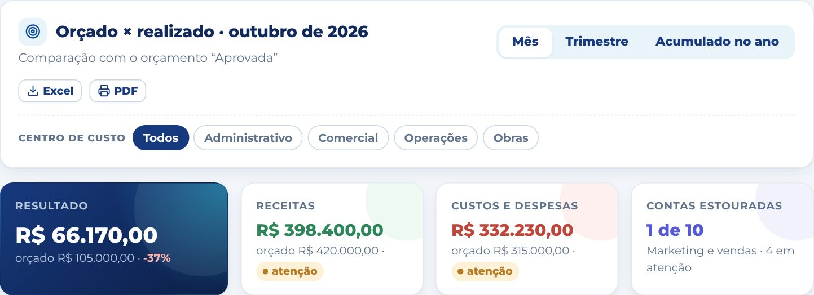
Escolha o período: Mês, Trimestre ou Acumulado no ano. Use ‹ › para trocar o mês.
Filtre por centro de custo para ver só uma área.
A tabela Por conta mostra orçado, realizado, diferença e % de cada conta. Toque num grupo para abrir ou fechar as contas dele.
O farol
Situação
Quando aparece
dentro
A diferença é de até 3%, ou é a favor da empresa (receita acima ou despesa abaixo do orçado).
atenção
Entre 3% e 10% contra o orçado.
estourado
Mais de 10% contra o orçado, ou um gasto numa conta sem orçamento.
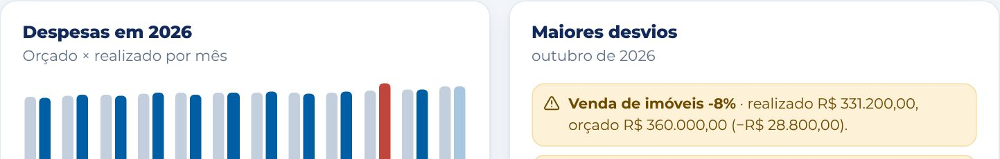
Despesas mês a mês (em vermelho, acima do orçado) e os maiores desvios do período
Guia do Vértice Empresas9
07 DRE gerencial
Da receita ao resultado
A DRE é montada sozinha a partir dos lançamentos e do plano de contas. Não é preciso digitar nada além das contas do dia a dia.
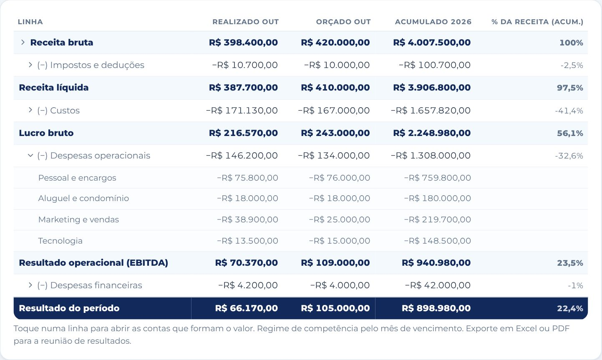
Coluna
O que mostra
Realizado
O que aconteceu no período escolhido (mês, trimestre ou ano até o mês).
Orçado
O que estava previsto na versão vigente do orçamento.
Acumulado
De janeiro até o mês escolhido.
% da receita
Quanto cada linha representa da receita bruta acumulada.
Toque numa linha com seta, como (−) Despesas operacionais, para ver as contas que formam o valor.
Os lançamentos entram pelo mês de vencimento (regime de competência gerencial).
Leve para a reunião de resultados com Excel ou PDF, no topo da tela.
Guia do Vértice Empresas10
08 Fluxo de caixa
O caixa do ano, mês a mês
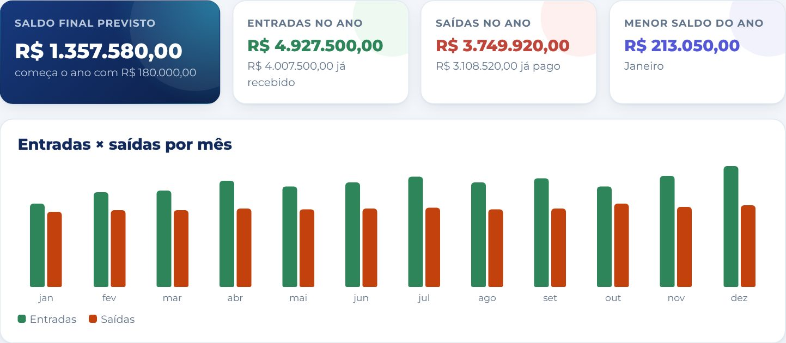
Entradas e saídas pela data de vencimento, com quanto já foi recebido e pago.
Saldo acumulado: parte do saldo inicial de caixa, informado em Plano de contas e centros, e soma mês a mês.
Menor saldo do ano: o mês mais apertado, para você se planejar com antecedência.
Se o caixa ficar negativo em algum mês, um aviso vermelho aparece no topo, com os meses.
A tabela no fim da tela mostra entradas, saídas, saldo do mês e saldo acumulado dos 12 meses.
Por centro de custoAo filtrar um centro, o fluxo mostra só as entradas e saídas dele, sem o saldo inicial da empresa. É o caso de quem é Gestor.
Guia do Vértice Empresas11
09 Plano de contas e centros de custo
Os cadastros que organizam tudo
A empresa já começa com um plano de contas padrão e três centros de custo. O Dono e o Financeiro ajustam à realidade da empresa.
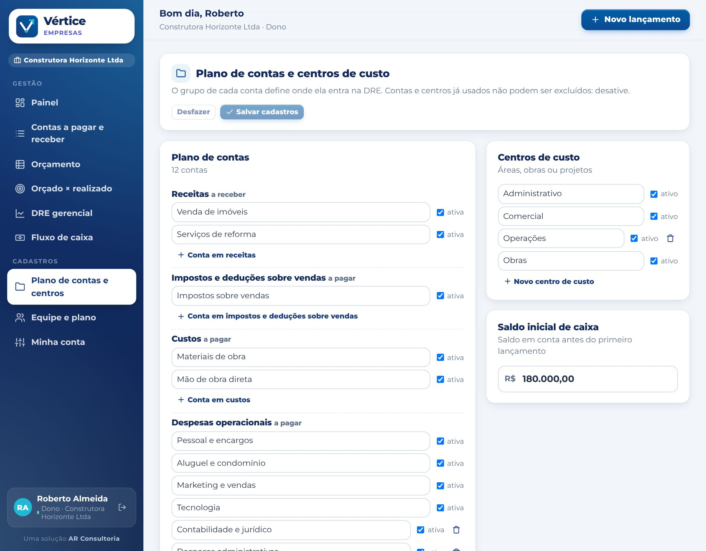
Grupo
Na DRE
Exemplos
Receitas
Receita bruta
Vendas, prestação de serviços
Impostos e deduções
(−) Impostos e deduções
Simples Nacional, ISS
Custos
(−) Custos
Materiais, mão de obra direta
Despesas operacionais
(−) Despesas operacionais
Pessoal, aluguel, marketing, sistemas
Despesas financeiras
(−) Despesas financeiras
Tarifas bancárias, juros
Criar, renomear e desativar contas e centros. Toque em Salvar cadastros ao terminar.
Contas e centros já usados não podem ser excluídos: desative. Eles somem das opções novas, e o histórico continua certo.
Guia do Vértice Empresas12
10 Equipe, plano e solicitações
Quem é quem na empresa
Em Equipe e plano todos veem a equipe, os papéis e o plano da empresa. As alterações são feitas pela AR Consultoria, por segurança.
Para pedir uma alteração (Dono)
Toque em Solicitar alteração à AR.
Escolha o pedido: novo usuário, mudar papel, bloquear usuário, mudar de plano ou outro.
Preencha o nome, o e-mail, o papel e o centro de custo.
Envie pelo WhatsApp ou direto para o painel da AR.
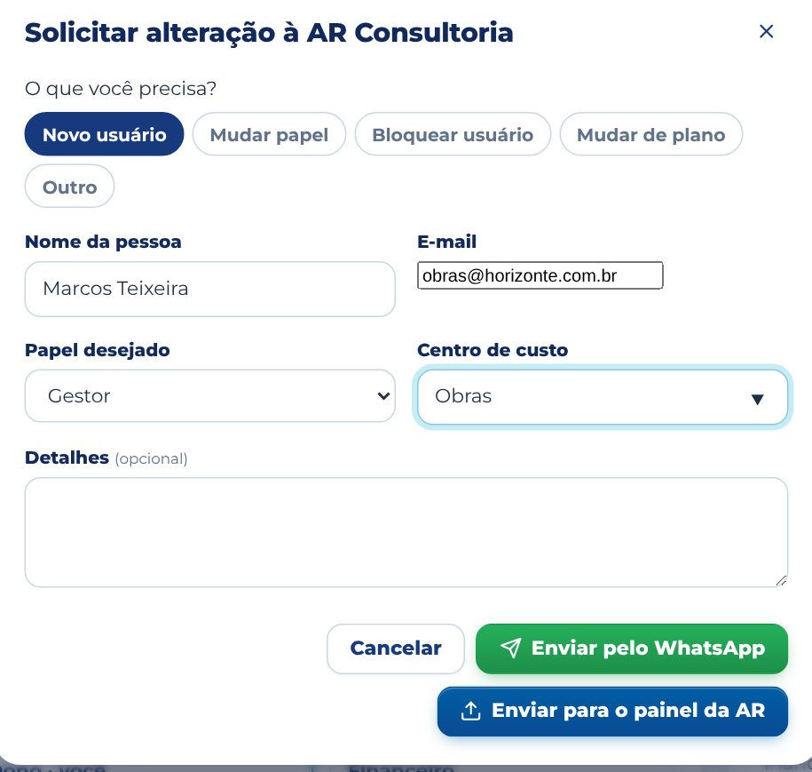
Planos
Plano
Usuários
Mensal
Essencial
Até 3
R$ 149,00
Gestão
Até 8
R$ 299,00
Grupo
Até 20
R$ 590,00
Usuários de Leitura não contam no limite. Há também planos trimestral, semestral e anual, mais baratos por mês.
A assinatura é da empresa e começa no primeiro acesso de qualquer usuário dela. Perto do vencimento, a AR envia um aviso.
Guia do Vértice Empresas13
11 Celular, exportação e dúvidas
No celular e na reunião
No celular
O menu fica embaixo. Deslize para o lado para ver todas as telas.
O botão redondo + cria um lançamento de qualquer tela.
Instale como app: Chrome ⋮ → Instalar app; iPhone Compartilhar → Tela de Início.
Em Minha conta: mudar o nome, trocar a senha e sair.
Exportar
Excel: contas do mês, orçamento, orçado × realizado, DRE e fluxo de caixa.
PDF: o botão PDF abre a impressão já sem menus. Escolha Salvar como PDF.
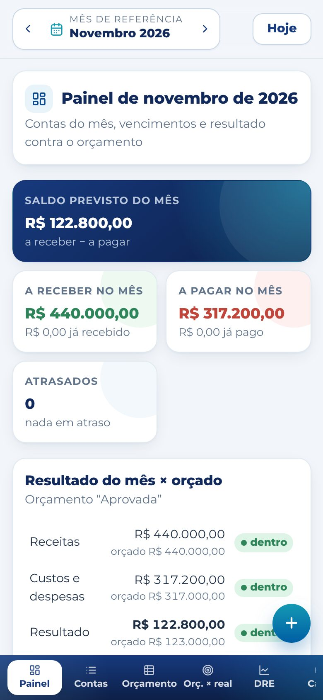
O painel no celular
Perguntas frequentes
Outra empresa ou a AR veem os nossos lançamentos?
Outra empresa, nunca. A AR cuida dos acessos e do plano, sem precisar abrir os números da empresa.
Duas pessoas podem lançar ao mesmo tempo?
Sim. Cada lançamento é salvo na hora. Ao voltar para a aba do Vértice, a tela se atualiza com o que os outros lançaram.
Precisa de ajuda?
Fale com a AR Consultoria pelo WhatsApp em que a empresa recebeu os acessos, ou use Solicitar alteração à AR.
Guia do Vértice Empresas · Uma solução AR Consultoria14